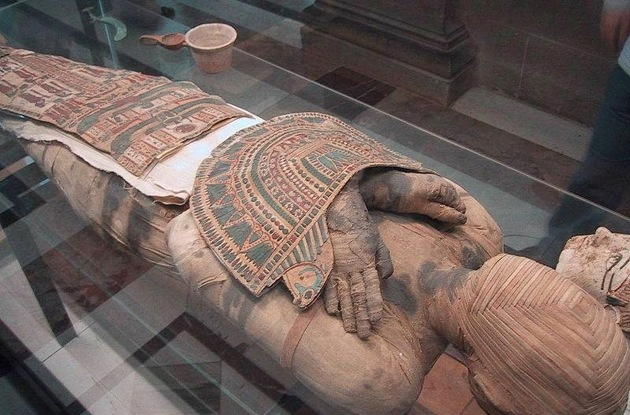
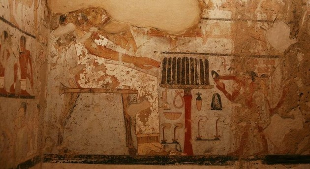

A Arte Egípcia nasceu há mais de 3000 anos a.C. e está ligada à religiosidade, visto que a maior parte das suas estátuas, pinturas, monumentos e obras arquitetônicas se manifesta em temas religiosos.
Assim, o interior dos templos, bem como as peças ou espaços relacionados com o culto dos mortos, eram artisticamente elaborados. Os túmulos são um dos aspectos mais representativos da arte egípcia.
Isso porque os egípcios acreditavam na imortalidade da alma e que ela poderia sofrer eternamente, caso o corpo fosse profanado.
Daí decorre a mumificação e o caráter monumental do local onde as múmias eram colocadas, cujo objetivo estava voltado para protegê-las pela eternidade.
O faraó contratava artistas para desenhar e pintar nas paredes das pirâmides, que viriam a ser os seus túmulos. Essas pinturas detalhavam a vida deles e seu entorno, de modo que essa arte registra parte da história do Egito.
Nessa sociedade, a arte era produzida de forma padronizada e não dava espaço para a criatividade.
Dessa maneira, foi realizada uma arte anônima, pois o importante era a perfeita realização das técnicas executadas e não o estilo dos artistas.
A dimensão das pessoas e objetos não caracterizava uma relação de proporção e distância, mas sim os níveis hierárquicos daquela sociedade. Assim, o faraó era sempre o maior dentre as figuras representadas numa pintura.
As tintas utilizadas nessas pinturas eram extraídas na natureza:
- Preto (kem): associado à noite e à morte, a cor preta era obtida do carvão de madeira ou de pirolusite (óxido de manganésio do deserto do Sinai).
- Branco (hedj): extraído do cal ou gesso, o branco simbolizava a pureza e da verdade.
- Vermelho (decher): representava a energia, o poder e a sexualidade e era encontrado em substâncias ocres.
- Amarelo (ketj): estava associado à eternidade e era extraído do óxido de ferro hidratado (limonite).
- Verde (uadj): simboliza a regeneração e a vida e era obtido da malaquite do Sinai.
- Azul (khesebedj): extraído do carbonato de cobre, o azul estava associado ao rio Nilo e ao céu.